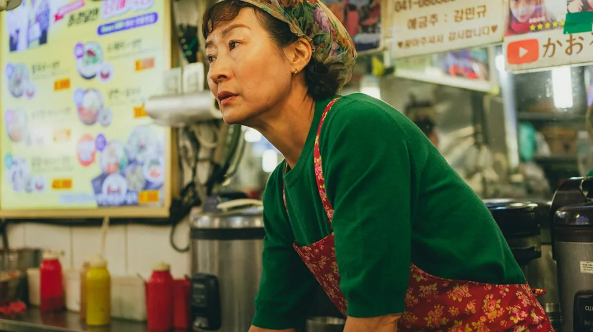

안동 종가음식 체험, 어디서 어떻게? 예약부터 100% 즐기는 법
사진: FOX ^.ᆽ.^= ∫ / Pexels (무료 이미지, 출처 표기)
안동 종가음식, 왜 특별할까요?

안동 종가음식은 단순한 요리를 넘어, 유구한 역사와 선조들의 지혜가 담긴 문화유산입니다. 대를 이어 전해 내려오는 조리법은 물론, 제철 식재료를 활용하고 손님을 정성껏 대접하는 종가(宗家)의 정신이 깃들어 있죠. 각 종가마다 독특한 맛과 이야기가 있어 미식가들 사이에서도 특별한 경험으로 꼽힙니다. 안동시와 안동문화관광단지 등에서는 이러한 종가음식의 가치를 알리기 위한 다양한 노력을 하고 있습니다.
안동 종가음식 체험 프로그램, 어디서 가능할까?
안동에서 종가음식을 체험하는 방법은 크게 세 가지로 나눌 수 있습니다. 첫째는 고택에서 직접 운영하는 프로그램에 참여하는 것이고, 둘째는 종가음식 전문점에서 정식 코스를 즐기는 것입니다. 셋째는 안동 국제탈춤페스티벌 같은 대규모 행사 기간에 연계된 특별 체험 프로그램을 이용하는 방법입니다.
일부 고택은 숙박과 함께 종부(宗婦)가 직접 준비한 전통 한정식을 맛볼 기회를 제공합니다. 이는 음식뿐 아니라 고택의 분위기와 종가의 삶을 간접적으로 경험할 수 있다는 점에서 인기가 많습니다. 전문점들은 종가음식의 전통을 현대적으로 재해석하거나 특정 종가의 음식에 집중하여 선보이기도 합니다. 어떤 형태를 선택하든, 방문 전 미리 정보를 확인하고 예약하는 것이 중요합니다.
안동 종가음식 체험 예약, 이것만 알면 성공!
안동 종가음식 체험은 인기가 많아 사전 예약이 필수적입니다. 특히 주말이나 성수기에는 일찍 마감될 수 있으므로, 최소 2주 전에는 예약하는 것이 좋습니다. 예약은 주로 해당 고택이나 음식점의 공식 웹사이트, 또는 안동 관광 정보 센터를 통해 진행됩니다. 아래 표를 통해 주요 예약 방법을 비교해 보세요.
예약 시에는 방문 인원, 날짜, 시간 외에 알레르기나 채식 등 특별한 식사 요구 사항이 있다면 미리 알려주는 것이 좋습니다. 대부분의 종가음식 체험은 한정된 인원에게 맞춤형으로 제공되므로, 변경 사항이 발생하면 즉시 연락하여 조율해야 합니다.
체험 전 필수 체크리스트: 더 알찬 방문을 위해
성공적인 안동 종가음식 체험을 위해 몇 가지를 미리 확인하면 좋습니다.
- 비용 확인: 체험 프로그램의 종류와 포함된 내용에 따라 가격이 다릅니다. 2026년 8월 기준으로 1인당 3만원대부터 10만원대 이상까지 다양하며, 식사 외에 다도 체험이나 한복 체험 등이 포함될 수 있습니다.
- 교통편: 안동 시내에서 체험 장소까지의 이동 수단을 미리 계획하세요. 일부 고택은 대중교통 접근이 어렵거나 시내 외곽에 위치할 수 있습니다. 자가용을 이용한다면 주차 공간 확인도 필요합니다.
- 소요 시간: 식사 시간 외에 종가 해설, 주변 둘러보기 등 총 소요 시간을 파악하여 다음 일정에 지장이 없도록 계획합니다.
- 복장: 특별한 드레스코드가 있는 경우는 드물지만, 한옥의 분위기를 고려하여 편안하고 단정한 복장을 준비하면 좋습니다.
정확한 사항은 각 체험 장소의 공식 홈페이지나 안동시 관광 정보 센터에서 다시 확인하시길 권장합니다.
체험 후기: 잊지 못할 미식 경험 만들기
안동 종가음식 체험은 단순히 배를 채우는 것을 넘어, 한국의 전통 문화를 오감으로 경험하는 기회입니다. 음식이 나오면 먼저 눈으로 그 아름다움을 즐기고, 음식에 얽힌 이야기나 조리법을 설명을 통해 들어보세요. 종부님이나 해설사가 있다면 적극적으로 질문하며 교감하는 것이 좋습니다. 음식을 맛볼 때는 재료 본연의 맛과 간장, 된장 등 발효 음식의 깊은 풍미를 천천히 음미해 보세요.
체험을 마치고 나면, 안동 특산물을 활용한 기념품이나 간식(예: 안동소주, 안동식혜, 안동 간고등어 등)을 구매하여 집으로 돌아가서도 그 맛과 추억을 이어가는 것도 좋은 방법입니다. 이러한 작은 노력들이 안동 종가음식 체험을 더욱 풍성하고 잊지 못할 경험으로 만들 것입니다.
🔗 이 글도 함께 보면 좋아요: 종가음식 프라이빗 다이닝, 가격대별 경험 완벽 비교 가이드
관련 추천 상품
안동 종가음식, 전통 한정식, 한식 체험 관련 인기 상품 보러가기
이 포스팅은 쿠팡 파트너스 활동의 일환으로, 이에 따른 일정액의 수수료를 제공받습니다.